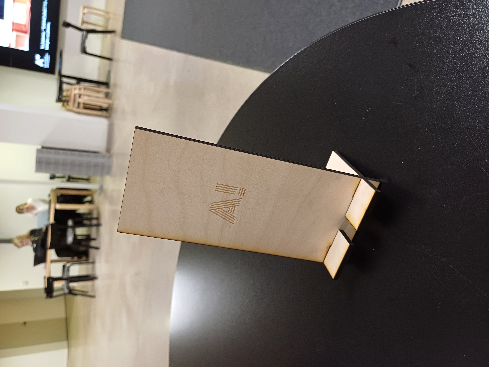
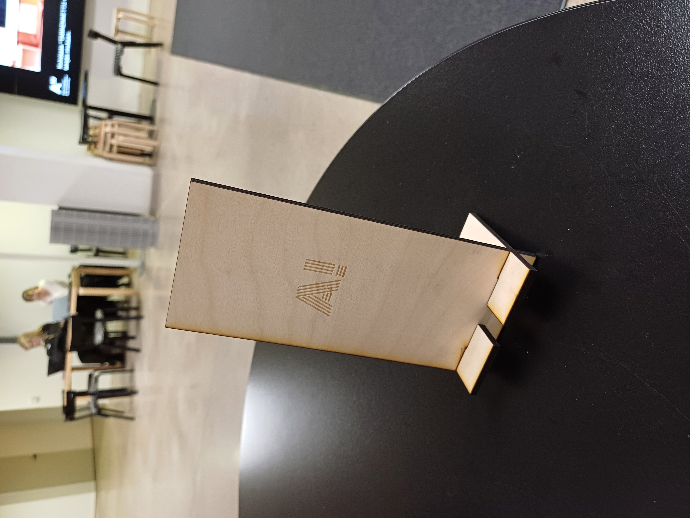

Types of Computer-Controlled Cutting
Computer-controlled cutting can be used in many different applications, like in fabrication of
stickers, wooden parts or metal components.
Vinyl cutting uses a blade to cut the design out of materials like vinyl or heat transfer film.
Laser cutting in the other hand can be taken as a more violent version of this.
A laser cutter uses powerfull laser to cut the design out of nearly any material
(this is just up to the specs of the laser).
Waterjet cutting can be used in somewhat similar usecases as laser, but as the cutting
is done with high pressure water, this is more suitable for cutting and graving thicker materials and/or less precise designs.
There are also other more advanced cutting methods, such as CNC milling and plasma cutting and many more.
In essence, there will be a computer-controlled cutting method for nearly any part. It is the designer's task to
figure out, which ones they can/should/could use for fabricating their design. In the end, each technique has it's own pros and cons.
Working Principle of Laser Cutter
A laser cutter works, as one could guess, by directing a powerfull laser beam onto a material to cut and engrave it based on
instructions given via a computer. The beam is constructed using lenses such that the beam is the most powerfull when it arrives to the surface of the material (at least in the optimal case).
The beam melts, burns and vaporizes the material along the path the cutter is set on. The power, frequency and speed of the laser can be adjusted so that the material
is not burned too much (results in burned edges) or then so that the laser doesn't even cut trough the material but rather just engraves it. These settings of speed, frequency and power
are spesific for each material as each material are different.
Laser waist is the narrowest part of the laser beam and thus the most effective for the cutting. The waist should be always alligned properly on the surface to cut clean and precise pieces.
Laser focus is used to focus the laser waist onto the surface as talked previously. After alligning the beam correctly, one can obtain the smallest amount of kerf possible. Kerf means the width of the
removed material during cutting. If the laser focus is off, kerf will grow and result in less precise cutting. There are often auto-focus ability in the laser cutter, but the things discussed here should still be
in mind when making the cuts as also the auto-focus can be a bit off sometimes.
Designing Lasercuttable Object in FreeCAD
I decided to design a phonestand with a space for a charging cable. I started the design by measuring my phone using a ruler and sketching a simple design on paper. I then listed the measurements into a spreadsheet in order to use those in the actual 3D design. However, this is where I did the first mistake as I didn't take into account that it takes more than 1 cm for the charging cable to be under the phone. In the final part, all of the cables can't properly fit under the phone.
After I had the dimensions of the design in the spreadsheet, I started to model the basic parts using the sketcher in FreeCAD. I used the data of the spreadsheet to fully constrain all the parts of the phonestand. I used the pad tool to make the parts 4mm thick as I planned to use 4mm plywood as my material. Also here, as I modelled the joints of the phonestand, I could have taken better into account that as the laser cutter cuts the part, it takes a bit more material out of it so that a 4mm wide gap could be 5mm for example. However, this didn't turn out to be a problem in the and as all parts fit well together but this is something to keep in mind in the future. Below, there are pictures of the final design.
As the model was finished, I made a 2D images of all the parts in my design first using the TechDraw ability in FreeCAD to make 2D images of all the parts and then exporting this picture as pdf into Adobe Illustrator, where I extracted the shapes and made them ready for laser cutting by making sure they are not filled and by adjusting the line thickness to 0.01mm. After this was done, I added an "A!" using the text tool of the Illustrator and alligned it to approximately center after making the lines of the text to none and fill to a nice red color. I saved the Adobe file into Adobe cloud service and the design was ready to be cut using the local computer and laser cutter at the Fablab.
Lasercut and Assembly
I had used the laser cutter a few times before so the workflow was pretty familiar to me. First I set up the laser cutter by following the instructions that are available via this link. I first used a test file with a simple square in it to test that the settings for cutting and graving are good for the material in use (so here 4mm plywood as discussed above). After checking that the preset 6mm plywood settings and plywood deep encraving settings were good for this case I sent the actual design to the laser cutter and cut the parts. It turned out that the cut was more or less perfect and all parts fit well together without too little or too much space in the joints. The only problem that turned out was that the charging cable was not fitting well but otherwise the design is very good as it supports the phone well and is not pushed over easily. The FreeCAD file of the phonestand and SVG file of the cut ready design can be downloaded via via this link.
 
